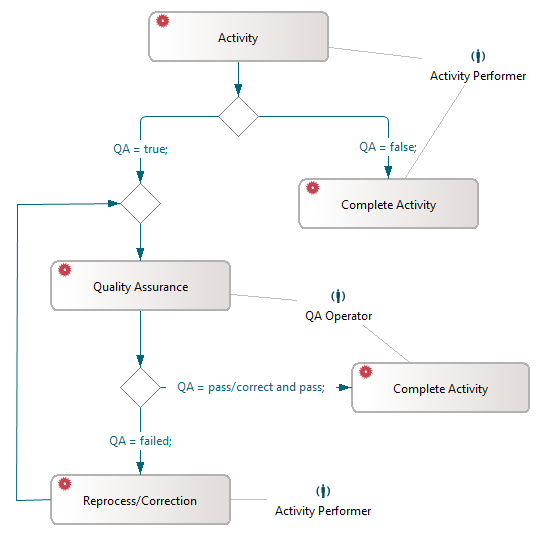
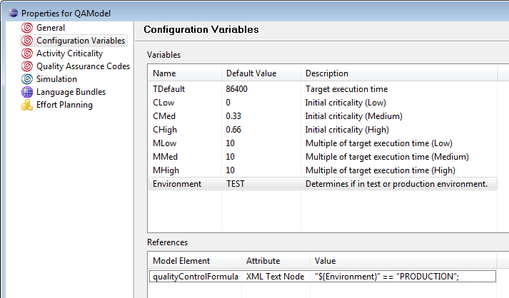
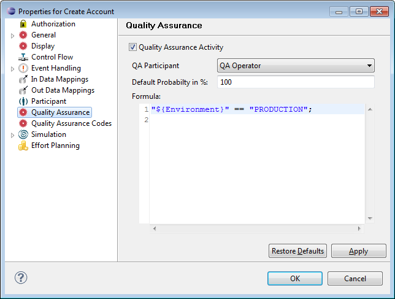
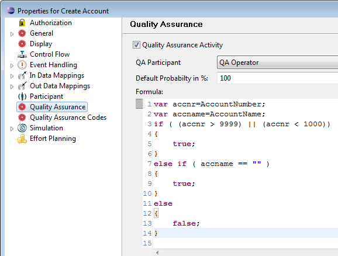
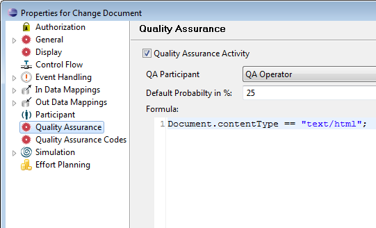

Stardust provides the option to mark interactive activities for quality assurance. Quality assurance criteria are specified for such activities and they are reviewed by a quality assurance operator.
This section describes common usage patterns, where different criteria for quality assurance performance are described.
Assuming an activity, which is performed in a test environment as well as in production mode. Quality assurance on this activity is only required in production mode. To decide if quality assurance is required, create a configuration variable and evaluate it in the quality assurance formula. For a more detailed description on this use case, refer to section Using a formula based on configuration variables.
An accountant has to type in data for accounts of users. To avoid known invalid inputs, quality assurance should be performed on all activities, in case one of these invalid inputs were given. For a more detailed description on this use case, refer to section Using Primitive Data to evaluate the Formula.
A use case for a combination of the formula and a probability value is a document processing workflow. Quality assurance should only take place in case the document is of a specific type. Documents of this type need review on a percentage basis, e.g. 25% of these document types need quality assurance.
For a more detailed description on this use case, refer to section Using a Combination of Probability and Formula.
You can mark an interactive activity for quality assurance in its property page. If an activity is marked for quality assurance, the following criteria for quality assurance can be set:
For details on how to set these criteria in the according modeler please refer to chapter Specifying Activity Properties in the Business Process Modeling Handbook or to chapter Quality Assurance on interactive Activities of the Eclipse Modeling Guide respectively.
The quality assurance operator specified for an interactive activity reviews the according activity instances. They are able to:
The default quality assurance sample size will be used whenever no specific probability has been configured for the current performer. The rate is a value between 0 and 100 percent. For example:
The default value is 100%.
Stardust provides the ability to use process data for quality assurance evaluation. These can be used instead of or in combination with the quality assurance sample rates. JavaScript based expressions can be added in the property page of interactive activities in the modeler. These are evaluated as described in section Determining whether to perform Quality Assurance or not.
The specified formula and quality assurance rate are applied in combination. First, the formula is executed. If it returns false, no quality assurance will be performed on this activity instance. In case the formula returns true, the probability configured will be applied for the activity and the activity instance will be marked for quality assurance depending on the resulting probability experiment.
Quality assurance is applied in the following way for specific cases:
The runtime algorithm to determine whether or not to perform quality assurance for a given activity instance is as follows:
If an activity is completed, the following steps are performed to check for quality assurance:
The following graphic illustrates this process:

Figure: Quality Assurance Lifecycle
Data mappings for activities marked for quality assurance should be modeled in a way that all data that goes out could be read and displayed.
Changing data values via the following suspend methods:
in not possible for quality assurance activities. Calling suspend() with a nonempty data map results in an InvalidArgumentException.
Note that completing a quality assurance activity instance only executes out data mappings and hence persists changed data values if the quality assurance specific activity properties indicate a "Pass with Corrections" result. In all other cases data mappings will not be executed and changed data will not be persisted.
Stardust provides the option to create quality assurance codes to indicate results of quality assurance. These can be specified in case of failure as well as pass condition. You can define a set of available codes and their values as model property. It is possible to restrict quality assurance codes to a subset of the available list for each activity. In the Stardust portal, the performing user can select codes from the provided list.
This section describes some example use cases, where different criteria for quality assurance performance are described. For a detailed tutorial on using quality assurance code, refer to chapter Performing Quality Assurance on interactive Activities in the Tutorial Guide.
Assuming an activity, which is performed in a test environment as well as in production mode. Quality assurance on this activity is only required in production mode. To decide if quality assurance is required, create a configuration variable and evaluate it in the quality assurance formula:

"${Environment}" == "PRODUCTION";
Figure: Configuration variable used in formula.
For details on configuration variables, refer to chapter Using Configuration Variables.
An accountant has to type in data for accounts of users. To avoid known invalid inputs, quality assurance should be performed on all activities, in case one of these invalid inputs were given.
var accnr=AccountNumber;
var accname=AccountName;
if ( (accnr > 9999) || (accnr < 1000))
{
true;
}
else if ( accname == "" )
{
true;
}
else
{
false;
}

Figure: Quality Assurance Criteria
A use case for a combination of the formula and a probability value is a document processing workflow. Quality assurance should only take place in case the document is of a specific type. Documents of this type need review on a percentage basis, e.g. 25% of these document types need quality assurance.

Figure: Criteria in Combination of probability and formula.
The Stardust portal provides a Quality Assurance Manager View, where you can specify quality assurance sample sizes for activities that are marked for quality assurance. If the activity default performer is scoped, an additional table is provided for departments to allow a quality assurance sample size to be specified for each data scope. Only administrators have access to the Quality Assurance Management View. For details on this view, refer to chapter Modifying Quality Assurance Probability of the Stardust Portal in the End User Handbook.
When a quality assurance activity is performed, for example in the second execution of the activity by the quality assurance participant, options to pass or fail the quality assurance are provided. The option to pass quality assurance allows the user to mark whether any corrections were done and to select according quality assurance codes. If choosing to fail quality assurance, you can select an according quality assurance (error) code and choose whether the activity should be delegated to the last activity performer.
Refer to chapter Executing Quality Assurance Activities of the Stardust Portal in the End User Handbook for details.
Activities are marked with different icons for: